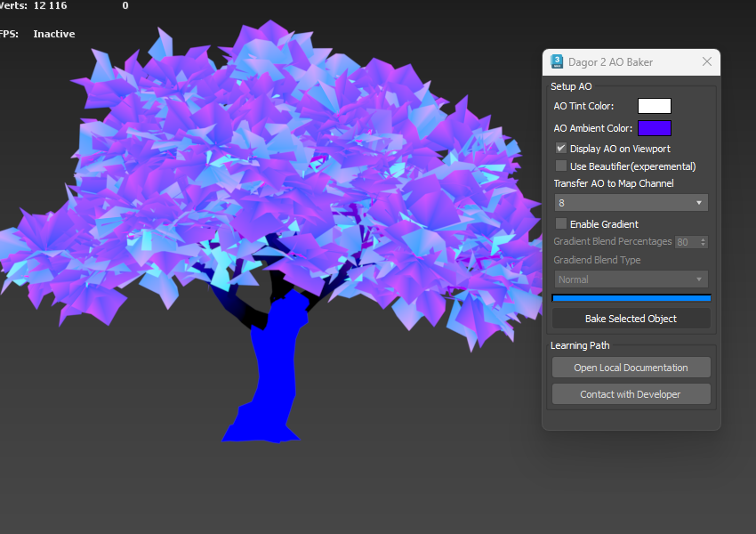

Dagor Ambient Occlusion Baker
Installation
Install the script following the provided instructions.
3ds Max Version Requirement
This script requires 3ds Max 2018 or later.
Accessing Ambient Occlusion Baker
Navigate to Gaijin Tools > Ambient Occlusion Baker. This will open the main window of the Dagor AO Baker.
To verify the version 3 of the script, go to Gaijin Tools 1 > About 2. The About window will display the current version. It’s important to check this regularly to ensure your script is up to date.
Plugin Version Requirement
Requires plugin version 1.4 or higher.
{kind=link}
Using Ambient Occlusion Baker
Open the tool panel by navigating to Gaijin Tools > Ambient Occlusion Baker.
Click the Bake Selected Object 1 button to generate Ambient Occlusion (AO) for the selected object in the Viewport. Note that AO can only be baked for one object at a time.
The tool provides several options:
AO Tint Color 2: chooses the color for the AO backlight.
AO Ambient Color 3: selects the color for the minimum lighting of the AO.
Display AO on Viewport 4: toggles the display of AO in the viewport (enabled by default).
Transfer AO to Map Channel 5: chooses which channel the AO results will be placed in (specific to Dagor Engine). By default, the AO is placed in channel 8.
Use Beautifier (experemental) 8: allows to change the nature of AO generation. It is a combination of post-generation and overlay lighting. It gives a more transparent and lighter result.
Enable Gradient 10: adds a gradient to the lighting from the base of the object to its top. Works well with bushes or small objects. The bottom will be shaded which looks nice as a result.
Gradient Blend Percentages 9: percentage value of gradient blending with the base lighting.
Gradient Blend Type 11: blending type. Determines how the AO and gradient base lighting will be blended.
Open Local Documentation 6: provides access to this article.
Contact with Developer 7: provides access the developer’s web page.
To test the AO Baker, load the following test scene:
tree_AO_test_2021.max.Open the scene and select the object
tree_vitellaria_wide_c.lod01.For the test, configure the colors as shown below:
Leave all other settings at their default values. Click Bake Selected Object and wait for the progress bar indicating scene lighting to complete. The result should appear as follows:
To view the results, right-click on the Viewport and select the appropriate display option:
Then, change the selection from Vertex Color to Map Channel Color as shown below:
The AO should now be displayed correctly:
{kind=link}
{kind=link}
{kind=link}
{kind=link}
{kind=link}
{kind=link}
Supported Model Types
The script works correctly with Edit Poly, Edit Mesh, and GrowFX model types. Other model types are not supported, and using modifiers on the source model may cause errors when generating LODs (level of detail) or collisions.